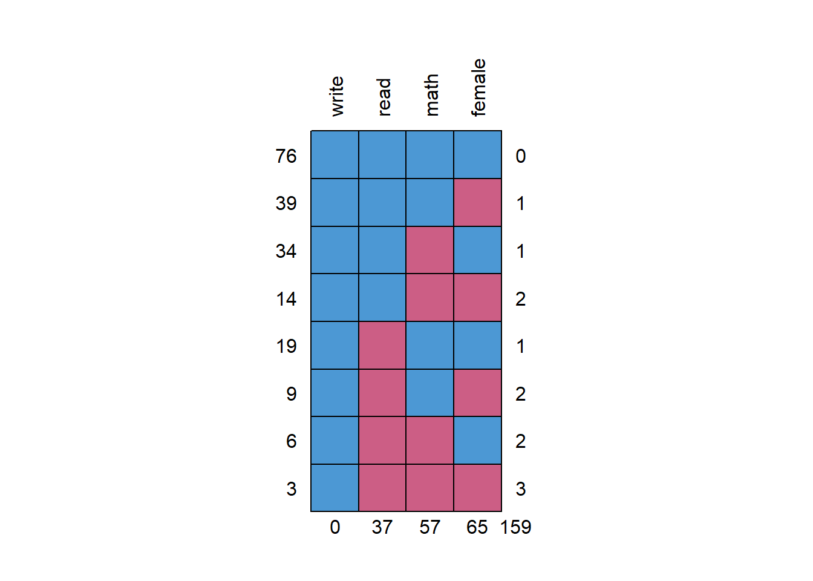

🎉 Using FIML and MI in R
Using FIML in R (Part 2)
A recurring question that I get asked is how to handle missing data when researchers are interested in performing a multiple regression analysis. There are so many excellent articles, books, and websites that discuss the theory and rationale behind what can be done. Often, what is recommended is to either use full information likelihood (FIML) or multiple imputation (MI). Many excellent articles explain in detail how these work. The purpose though of this post is to show how (again) to just run these models in R (the examples I show here are just for single-level data). I had already shown some of this before over here though I am adding to those notes to show some comparability with Mplus results. I will use lavaan for getting FIML results.
Read in the data
For purposes of comparability, I will just use the High School and Beyond demo data (n = 200) found on the UCLA Statistical Computing website which shows how to use FIML with Mplus. We first read in the complete data which we can use later when comparing results when using the dataset with missing data.
library(dplyr) #for selecting and using the pipe
hsbnomiss <- read.csv('https://stats.idre.ucla.edu/wp-content/uploads/2016/02/hsbdemo.dat',
header = F)
#note when data prepared for Mplus, there are no headers
#indicating the variable names
hsbnomiss2 <- select(hsbnomiss, 2, 6:8)
#only select columns we want
names(hsbnomiss2) <- c('female', 'read', 'write', 'math')
#name the columns
head(hsbnomiss2)## female read write math
## 1 1 34 35 41
## 2 0 34 33 41
## 3 0 39 39 44
## 4 0 37 37 42
## 5 0 39 31 40
## 6 1 42 36 42str(hsbnomiss2)## 'data.frame': 200 obs. of 4 variables:
## $ female: int 1 0 0 0 0 1 0 0 1 0 ...
## $ read : int 34 34 39 37 39 42 31 50 39 34 ...
## $ write : int 35 33 39 37 31 36 36 31 41 37 ...
## $ math : int 41 41 44 42 40 42 46 40 33 46 ...Run the regression (complete data)
In this example, we want to predict write using female, read, and math.
nomiss1 <- lm(write ~ female + read + math, data = hsbnomiss2)
summary(nomiss1)$coef %>% round(3)## Estimate Std. Error t value Pr(>|t|)
## (Intercept) 11.896 2.863 4.155 0
## female 5.443 0.935 5.822 0
## read 0.325 0.061 5.355 0
## math 0.397 0.066 5.986 0We can also do this using lavaan and the sem function. Note, in this case, the formula I specified is in between quotes. lavaan is often used for cfa and sem where the interrelationships between variables and latent factors are specified. Since this is just a regression with all observed variables, we can specify this in just one line (representing the formula).
library(lavaan)
nomiss2 <- sem('write ~ female + read + math', data = hsbnomiss2)
summary(nomiss2) #lot more information## lavaan 0.6-5 ended normally after 17 iterations
##
## Estimator ML
## Optimization method NLMINB
## Number of free parameters 4
##
## Number of observations 200
##
## Model Test User Model:
##
## Test statistic 0.000
## Degrees of freedom 0
##
## Parameter Estimates:
##
## Information Expected
## Information saturated (h1) model Structured
## Standard errors Standard
##
## Regressions:
## Estimate Std.Err z-value P(>|z|)
## write ~
## female 5.443 0.926 5.881 0.000
## read 0.325 0.060 5.409 0.000
## math 0.397 0.066 6.047 0.000
##
## Variances:
## Estimate Std.Err z-value P(>|z|)
## .write 42.368 4.237 10.000 0.000These results provide a benchmark of what the results should be when data are not missing.
Read in missing data
hsbwmiss <- read.csv('https://stats.idre.ucla.edu/wp-content/uploads/2017/04/hsbmis2.dat',
header = F)
#missing data are coded as -9999, recode to NA
hsbwmiss[hsbwmiss == -9999] <- NA
#I know you can do this in dplyr using some command
#but this is quick and basic
hsbwmiss2 <- dplyr::select(hsbwmiss, 2, 8:10)
names(hsbwmiss2) <- c('female', 'read', 'write', 'math')We can just look at the patterns of missing data quickly too using the mice package.
library(mice)
md.pattern(hsbwmiss2, rotate.names = T)
## write read math female
## 76 1 1 1 1 0
## 39 1 1 1 0 1
## 34 1 1 0 1 1
## 14 1 1 0 0 2
## 19 1 0 1 1 1
## 9 1 0 1 0 2
## 6 1 0 0 1 2
## 3 1 0 0 0 3
## 0 37 57 65 159The missing data patterns show a lot of missing data. We can run a naive regression and compare results to the complete case analysis. Also shows that only 48% of respondents have complete data. NOTE: There is no threshold as to what is considered an unacceptable amount of missing data.
wmiss1 <- lm(write ~ female + read + math, data = hsbwmiss2)
library(stargazer) #to show side-by-side output##
## Please cite as:## Hlavac, Marek (2018). stargazer: Well-Formatted Regression and Summary Statistics Tables.## R package version 5.2.2. https://CRAN.R-project.org/package=stargazerstargazer(nomiss1, wmiss1,
star.cutoffs = c(.05, .01, .001),
no.space = T, type = 'text')##
## ==================================================================
## Dependent variable:
## ----------------------------------------------
## write
## (1) (2)
## ------------------------------------------------------------------
## female 5.443*** 7.247***
## (0.935) (1.620)
## read 0.325*** 0.167
## (0.061) (0.107)
## math 0.397*** 0.447***
## (0.066) (0.117)
## Constant 11.896*** 17.160***
## (2.863) (4.964)
## ------------------------------------------------------------------
## Observations 200 76
## R2 0.526 0.468
## Adjusted R2 0.519 0.446
## Residual Std. Error 6.575 (df = 196) 6.966 (df = 72)
## F Statistic 72.518*** (df = 3; 196) 21.111*** (df = 3; 72)
## ==================================================================
## Note: *p<0.05; **p<0.01; ***p<0.001Regressions here show different results with reading not being predictive anymore of writing and the strength of the female coefficient increasing (and SEs are much higher).
Run the model accounting for missing data
We will now use FIML to account for the missing data. We will again use the sem function but will some additional options:
wmiss2 <- sem('write ~ female + read + math', data = hsbwmiss2,
missing = 'fiml', fixed.x = F)We specify missing = "fiml" which then uses fiml to account for the missing data. In addition, we include: fixed.x = F. FIML works by estimating the relationships of the variables with each other and requires estimating the means and variances of the variables. If fixed.x = T (the default), then the variances and covariances are fixed and are based on the existing sample values and are not estimated. You can specify the means and variances to be estimated in the model but requires more typing.
View the results:
summary(wmiss2)## lavaan 0.6-5 ended normally after 46 iterations
##
## Estimator ML
## Optimization method NLMINB
## Number of free parameters 14
##
## Number of observations 200
## Number of missing patterns 8
##
## Model Test User Model:
##
## Test statistic 0.000
## Degrees of freedom 0
##
## Parameter Estimates:
##
## Information Observed
## Observed information based on Hessian
## Standard errors Standard
##
## Regressions:
## Estimate Std.Err z-value P(>|z|)
## write ~
## female 5.436 1.130 4.809 0.000
## read 0.298 0.073 4.080 0.000
## math 0.401 0.078 5.117 0.000
##
## Covariances:
## Estimate Std.Err z-value P(>|z|)
## female ~~
## read -0.255 0.462 -0.551 0.582
## math 0.080 0.451 0.177 0.860
## read ~~
## math 68.122 9.634 7.071 0.000
##
## Intercepts:
## Estimate Std.Err z-value P(>|z|)
## .write 12.949 3.013 4.298 0.000
## female 0.591 0.041 14.384 0.000
## read 51.898 0.776 66.855 0.000
## math 52.724 0.756 69.714 0.000
##
## Variances:
## Estimate Std.Err z-value P(>|z|)
## .write 41.622 4.744 8.773 0.000
## female 0.238 0.029 8.321 0.000
## read 107.510 11.881 9.049 0.000
## math 95.591 10.940 8.737 0.000The summary presents more information and shows that the analysis is based on the 200 observations. The intercept here is shown under Intercepts –> .write. Results are much closer to the original results with no missing data (shown again below):
Estimate Std. Error t value Pr(>|t|)
(Intercept) 11.896 2.863 4.155 0
female 5.443 0.935 5.822 0
read 0.325 0.061 5.355 0
math 0.397 0.066 5.986 0If you just want the coefficients without the summary statistics (but still showing all the variances and covariances indicated by ~~ and the means denoted by ~:
parameterestimates(wmiss2)## lhs op rhs est se z pvalue ci.lower ci.upper
## 1 write ~ female 5.436 1.130 4.809 0.000 3.221 7.651
## 2 write ~ read 0.298 0.073 4.080 0.000 0.155 0.442
## 3 write ~ math 0.401 0.078 5.117 0.000 0.247 0.554
## 4 write ~~ write 41.622 4.744 8.773 0.000 32.324 50.920
## 5 female ~~ female 0.238 0.029 8.321 0.000 0.182 0.294
## 6 female ~~ read -0.255 0.462 -0.551 0.582 -1.160 0.651
## 7 female ~~ math 0.080 0.451 0.177 0.860 -0.804 0.964
## 8 read ~~ read 107.510 11.881 9.049 0.000 84.223 130.796
## 9 read ~~ math 68.122 9.634 7.071 0.000 49.240 87.004
## 10 math ~~ math 95.591 10.940 8.737 0.000 74.148 117.034
## 11 write ~1 12.949 3.013 4.298 0.000 7.044 18.854
## 12 female ~1 0.591 0.041 14.384 0.000 0.511 0.672
## 13 read ~1 51.898 0.776 66.855 0.000 50.377 53.420
## 14 math ~1 52.724 0.756 69.714 0.000 51.242 54.206You can compare the results with those derived using Mplus. Results are comparable:
MODEL RESULTS
Two-Tailed
Estimate S.E. Est./S.E. P-Value
WRITE ON
FEMALE 5.435 1.121 4.847 0.000
READ 0.298 0.072 4.168 0.000
MATH 0.401 0.077 5.236 0.000
Intercepts
WRITE 12.950 2.951 4.388 0.000
Residual Variances
WRITE 41.622 4.716 8.825 0.000
Try estimating the model using MI (see my previous post). Are results similar to the complete case results?
imp <- mice(hsbwmiss2, m = 50, seed = 1234)
mi1 <- with(imp, lm(write ~ female + read + math))
round(summary(pool(mi1)), 3)